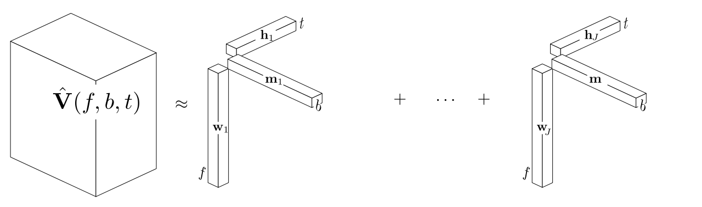

Common Fate Model for Unison Source Separation
Fabian-Robert Stöter, Antoine Liutkus, Roland Badeau, Bernd Edler, Paul Magron
March 21, 2016


Standard NMF based Source Separation
Unison Scenario

Common Fate Transform
Common Fate Theory
- Bregman in 1994 used term "Common Fate" in auditory scene analysis.
- He describes common fate as the ability to group sound objects based on their common motion over time
- Humans ability to detect and group sound sources by small differences in the FM and AM modulation is outstanding
Common Fate Transform
- STFT transforms signal into $X(\omega, \tau) \in \mathbb{C}$
- $X$ is split into overlapping rectangular $(N_a \times N_b)$ patches
- Compute complex 2D-DFT of each patch
- This yields an 4D-Tensor $(N_a, N_b, N_f, N_t)$
Compared to modulation spectrograms...
- CFT is computed using complex STFT X
- Easily invertible
- Models phase dependencies between neighbouring STFT entries
- Patches span/merge several frequency bins
- Results in modulation texture
Common Fate Transform

Common Fate Model
NMF
 $$\sum\limits_{j=1}^{J} \mathbf{w}_{j}(f) \circ \mathbf{h}_{j}(t) $$
$$\sum\limits_{j=1}^{J} \mathbf{w}_{j}(f) \circ \mathbf{h}_{j}(t) $$
CPD/PARAFAC/NTF
 $$\sum\limits_{j=1}^{J} \mathbf{w}_{j}(f) \circ \mathbf{m}_{j}(b) \circ \mathbf{h}_{j}(t)$$
Common Fate Model
 $$\sum\limits_{j=1}^{J} \mathbf{P}_{j}(a,b,f) \circ \mathbf{h}_{j}(t)$$
$$\sum\limits_{j=1}^{J} \mathbf{P}_{j}(a,b,f) \circ \mathbf{h}_{j}(t)$$
Models
- NMF: Non-Negative Matrix Factorization $V(f,t) = W(f)\times H(t)$
- CFM: Common Fate Model, $V(a,b,f,t) = P(a,b,f)\times H(t)$
- HR-NMF: High Resolution NMF model, Subband AR filtering of NMF excitation
- MOD: Barker 2013 $V(f,m,t) = W(f)\times A(m)\times H(t)$
- CFMM: Common Fate Magnitude Model, $V(a,b,f,t) = P(a,b,f)\times H(t)$
- CFMMOD: CFMM with $a=1$, $V(a,b,f,t) = P(a,b,f)\cdot H(t)$
Evaluation
Evaluation Results

Number of Components

Demo
Open Source Python Implementation
pip install commonfate
or clone on github: https://github.com/aliutkus/commonfate
Ⓒ AudioLabs, 2016
Common Fate Model for Unison Source Separation